MEU Timișoara Digital Infrastructure
One portal. Every platform.
A curated access layer for the full MEU Timișoara ecosystem: operations, participants, documents, feedback, safety, reporting and visual memory.

MEU Timișoara Digital Infrastructure
A curated access layer for the full MEU Timișoara ecosystem: operations, participants, documents, feedback, safety, reporting and visual memory.
